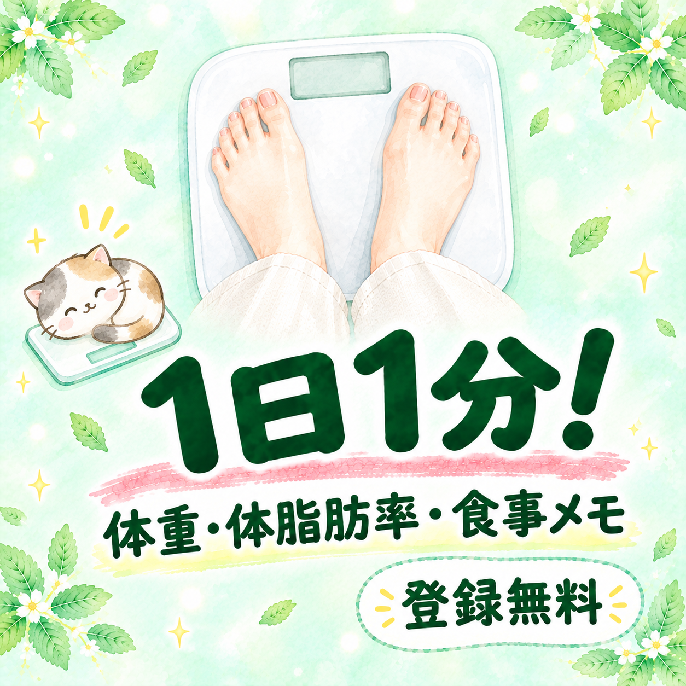
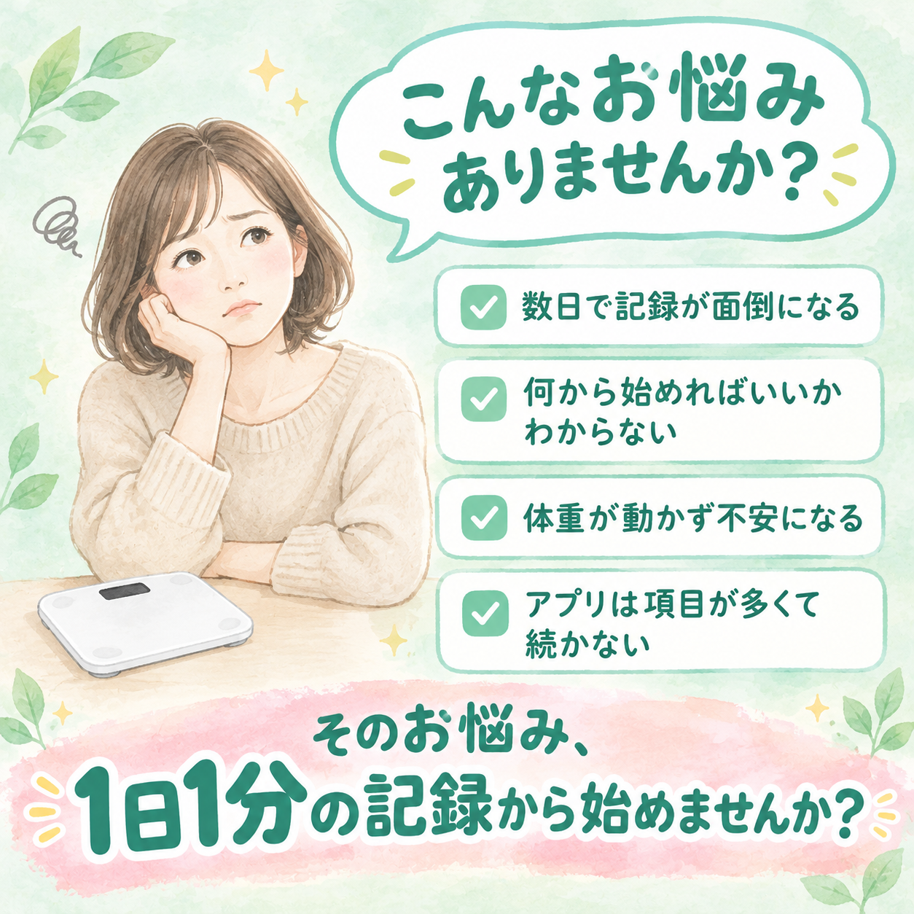
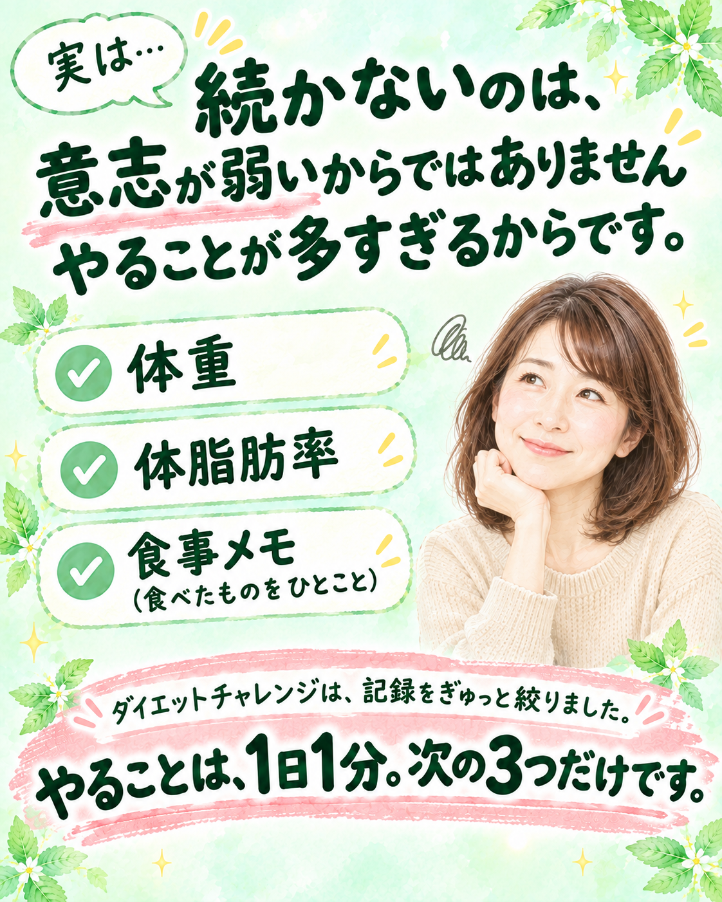
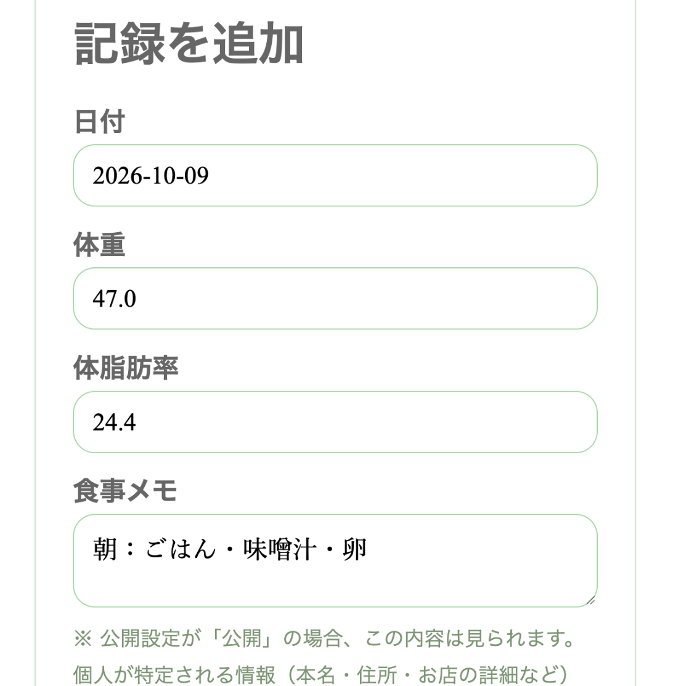
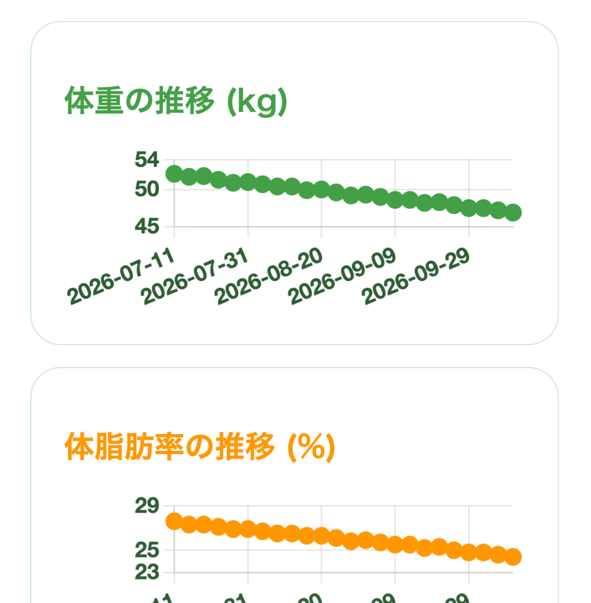
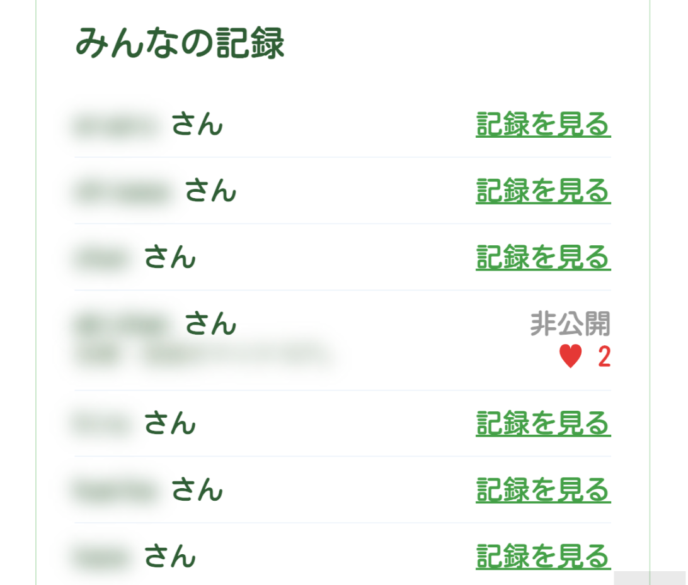

① 記録は、入力するだけ
体重・体脂肪率・食事メモの3つだけです。

② 記録はグラフに
変化が目に見えるので、やる気が続きます。

③ 仲間の記録も見られます
「みんなの記録」で、同じ目標の仲間を見つけて、ハートで応援できます。
公開するかどうかは、自分で選べます（完全に非公開にもできます）。

※画面はサンプルです。グラフの数値は表示例で、効果を保証するものではありません。個人の結果には差があります。他の参加者の名前はぼかしています。